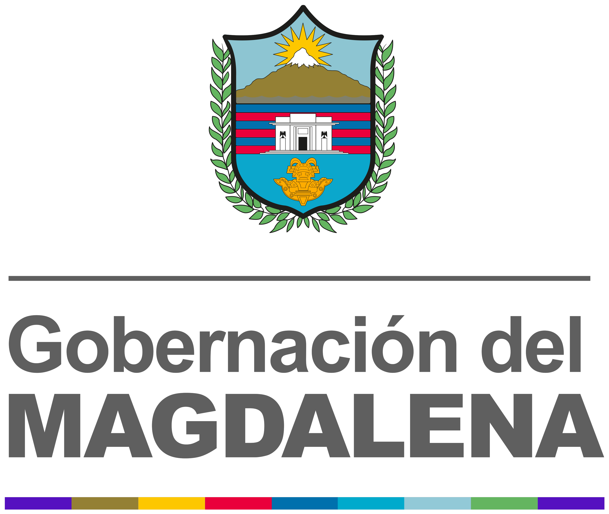
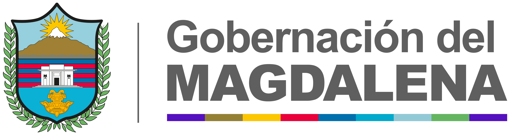
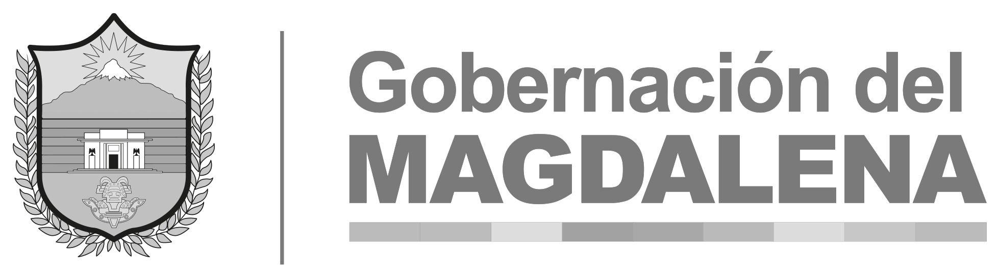
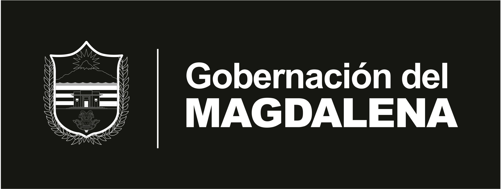
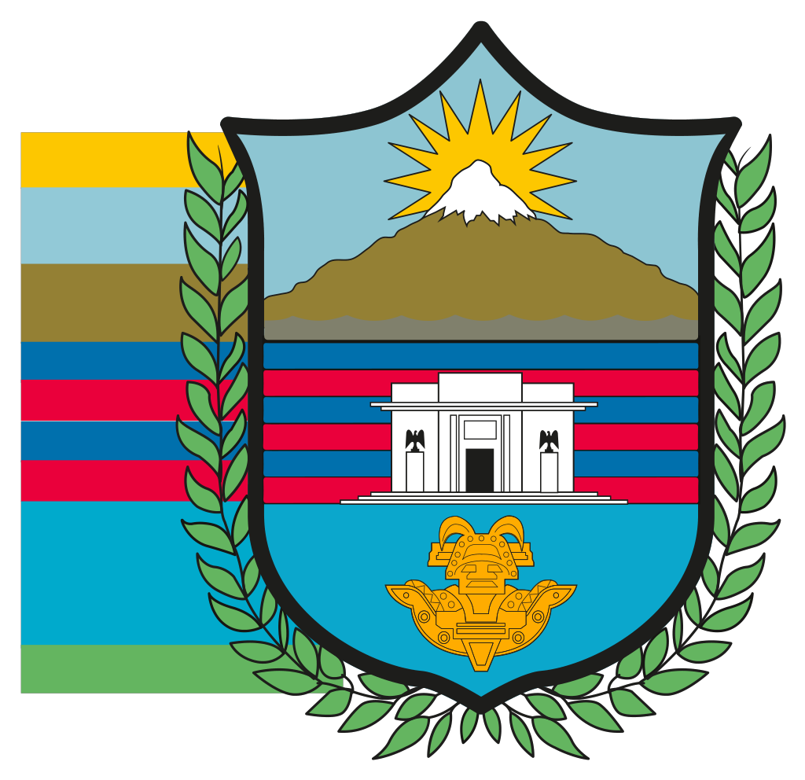
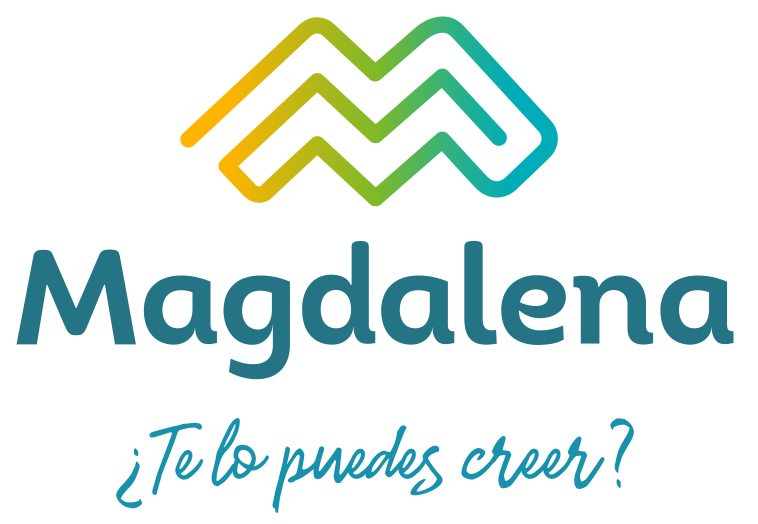

01. Descargas rápidas
02. Logotipos y elementos gráficos
Extraídos del PDF del manual en vectorial (SVG) y en alta resolución (PNG transparente y JPG sobre blanco, ×4). Cada tarjeta permite descargar el archivo, copiar la etiqueta <img> o su URL.





















03. Uso en web
URL base:
<!-- Cabecera -->
<a href="/"><img src="https://TU-HOST/manual_de_marca/assets/logos/svg/logo-horizontal-color.svg" alt="Gobernación del Magdalena" height="48"></a>
<!-- Pie de página oscuro -->
<img src="https://TU-HOST/manual_de_marca/assets/logos/svg/logo-horizontal-blanco-sobre-negro.svg" alt="Gobernación del Magdalena" height="48"><!-- Favicons: copie assets/favicon/ a la raíz de su sitio -->
<link rel="icon" href="/favicon.ico" sizes="any">
<link rel="icon" type="image/png" sizes="32x32" href="/icon-32.png">
<link rel="apple-touch-icon" href="/apple-touch-icon.png">
<meta name="theme-color" content="#0071BB">04. Recomendaciones técnicas
El manual no define márgenes de seguridad ni tamaños mínimos; estas son recomendaciones del equipo de desarrollo para pantalla, a validar con Comunicaciones.
✔ Usar los archivos originales
SVG siempre que sea posible; PNG ×2 para pantallas retina.
SVG siempre que sea posible; PNG ×2 para pantallas retina.
✔ Fondo claro/blanco
Sobre fotos o fondos de color, colocar el logo dentro de la cápsula blanca
Sobre fotos o fondos de color, colocar el logo dentro de la cápsula blanca
.mg-logo-pill (como en la valla del manual).✔ Versión negativa en fondos oscuros
Usar «blanco sobre negro» o «blanco sobre gris».
Usar «blanco sobre negro» o «blanco sobre gris».
✔ Espacio libre
Dejar alrededor del logo al menos la altura de la «M» de MAGDALENA.
Dejar alrededor del logo al menos la altura de la «M» de MAGDALENA.
✘ No deformar
Mantener proporción (usar solo
Mantener proporción (usar solo
height o width).✘ No recolorear ni aplicar sombras / efectos
Solo las versiones oficiales: color, gris, negro, negativo.
Solo las versiones oficiales: color, gris, negro, negativo.
✘ No poner el logo a color sobre el degradado azul
Usar la versión negativa o la cápsula blanca.
Usar la versión negativa o la cápsula blanca.
✘ No separar el escudo del texto
salvo en íconos pequeños (favicon, avatar de redes) donde se usa el escudo solo.
salvo en íconos pequeños (favicon, avatar de redes) donde se usa el escudo solo.